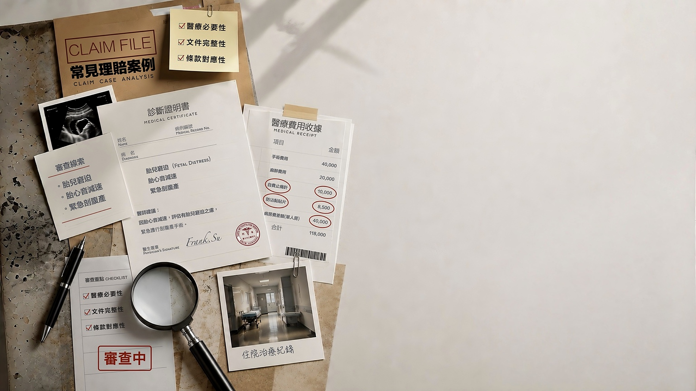
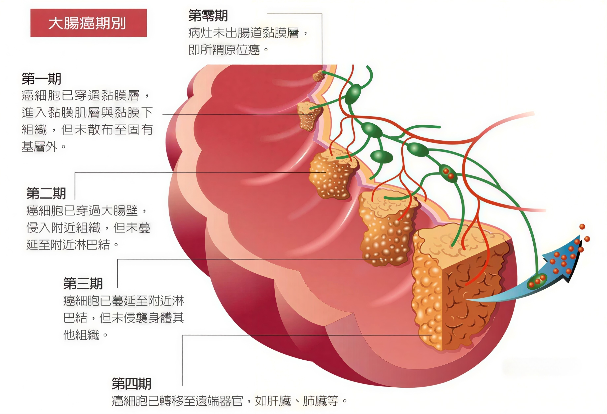
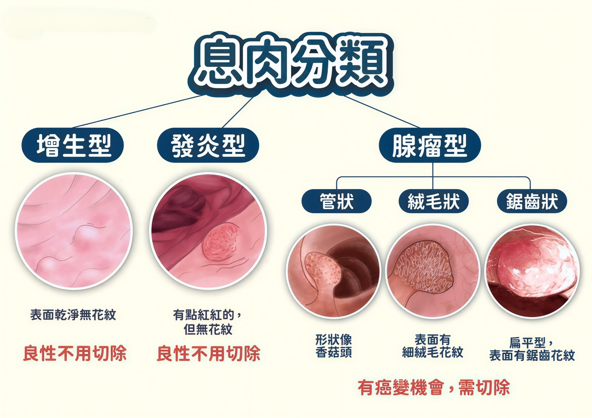
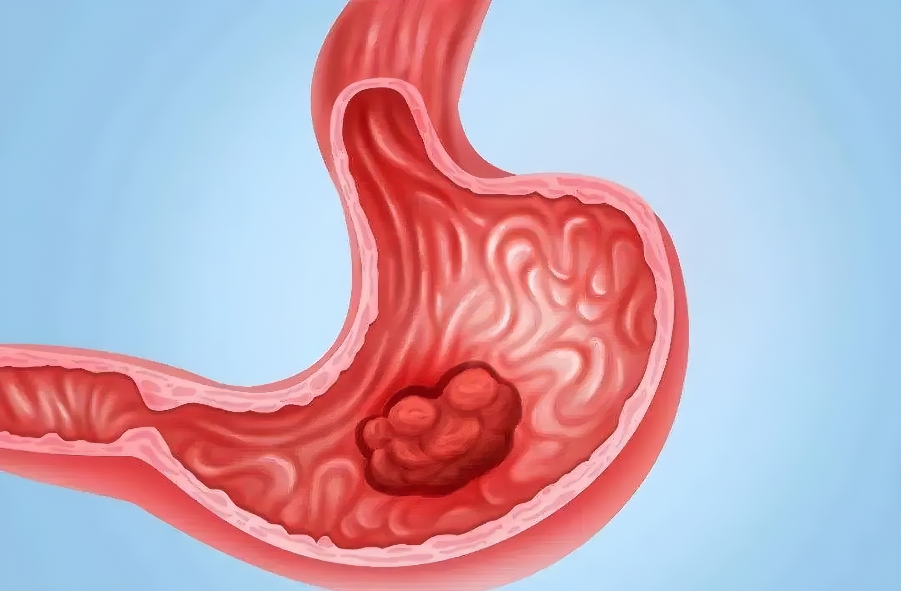
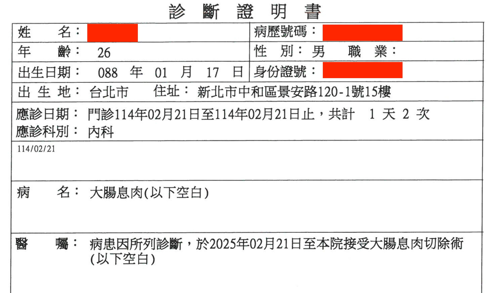
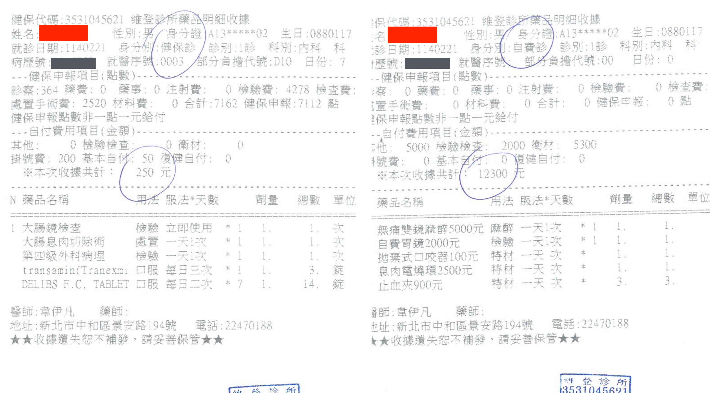
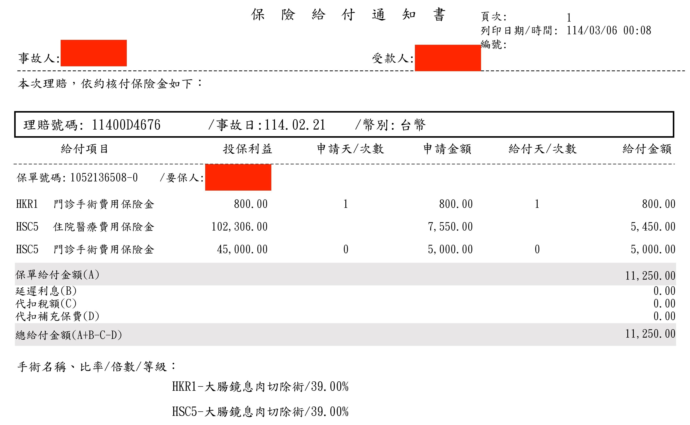
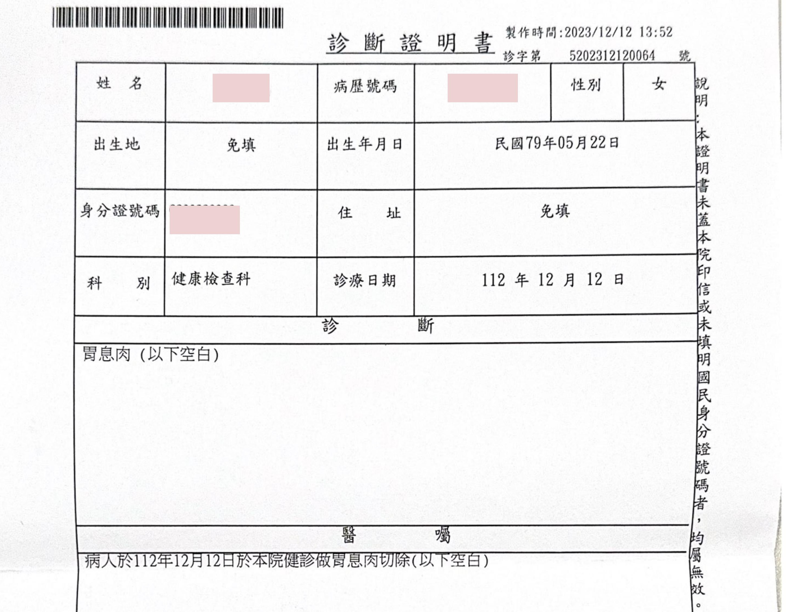
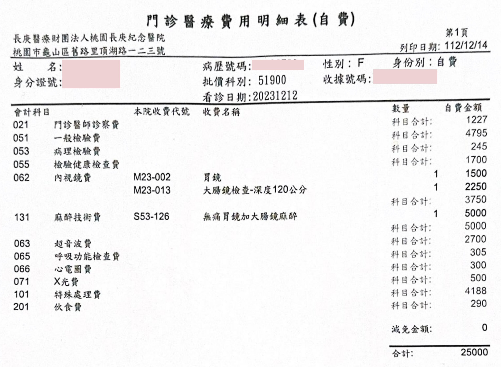
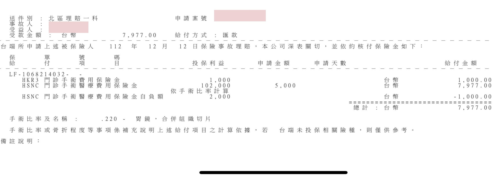

從醫療原因、內視鏡處置與費用明細，讀懂理賠結果如何形成。
息肉切除不是單純健檢花費，而是醫師判斷後的處置。當病名、手術名稱與費用明細串在一起，保障如何回應就會清楚呈現。

很多息肉是在內視鏡檢查時才被發現。它不一定代表癌症，但部分類型可能隨時間變化；醫師建議切除，通常是為了把未來風險先降下來。

多數大腸息肉沒有明顯症狀。很多人是在大腸鏡健檢時才發現；若醫師評估適合，會在同次檢查中切除，並送病理確認性質。

胃息肉常在胃鏡檢查中偶然發現。醫師會依內視鏡觀察、切片與病理結果，判斷是否同次處置、後續追蹤或進一步治療。
26 歲男性，大腸鏡健檢中發現大腸息肉，當場安排切除術。診斷書記載手術名稱，收據呈現健保與自費明細。



本案醫療花費 12,550 元，保險理賠 11,250 元。因診斷書載明大腸息肉切除術，手術給付與醫療費用補償一起回補支出。
給付項目包含門診手術與醫療費用補償；實際結果仍依保單條款、投保內容、醫療文件與保險公司核定。
女性，長庚醫院健檢透過胃鏡發現胃息肉，同次手術切除。費用全數自費，理賠依手術比率計算。



本案醫療花費 25,000 元，保險理賠 7,977 元。即使是在健檢流程中發現，只要文件清楚記載手術處置，仍可能形成理賠依據。
給付項目包含門診手術與門診手術醫療費用補償；實際結果仍依保單條款、投保內容、醫療文件與保險公司核定。